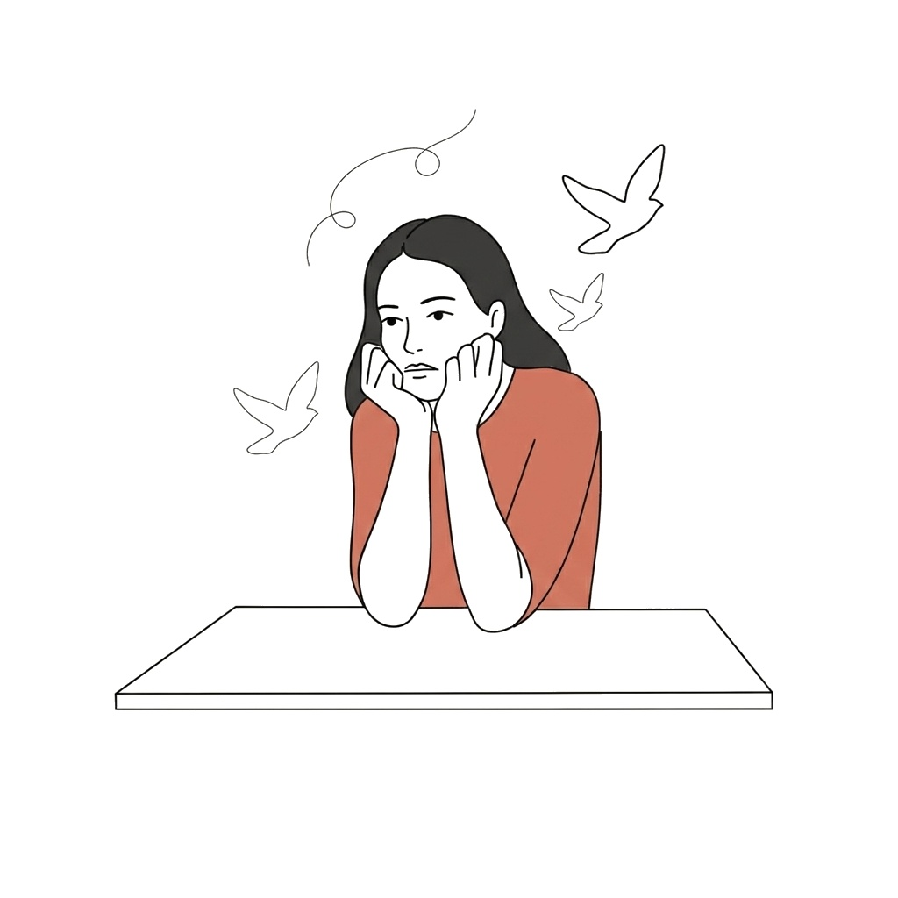
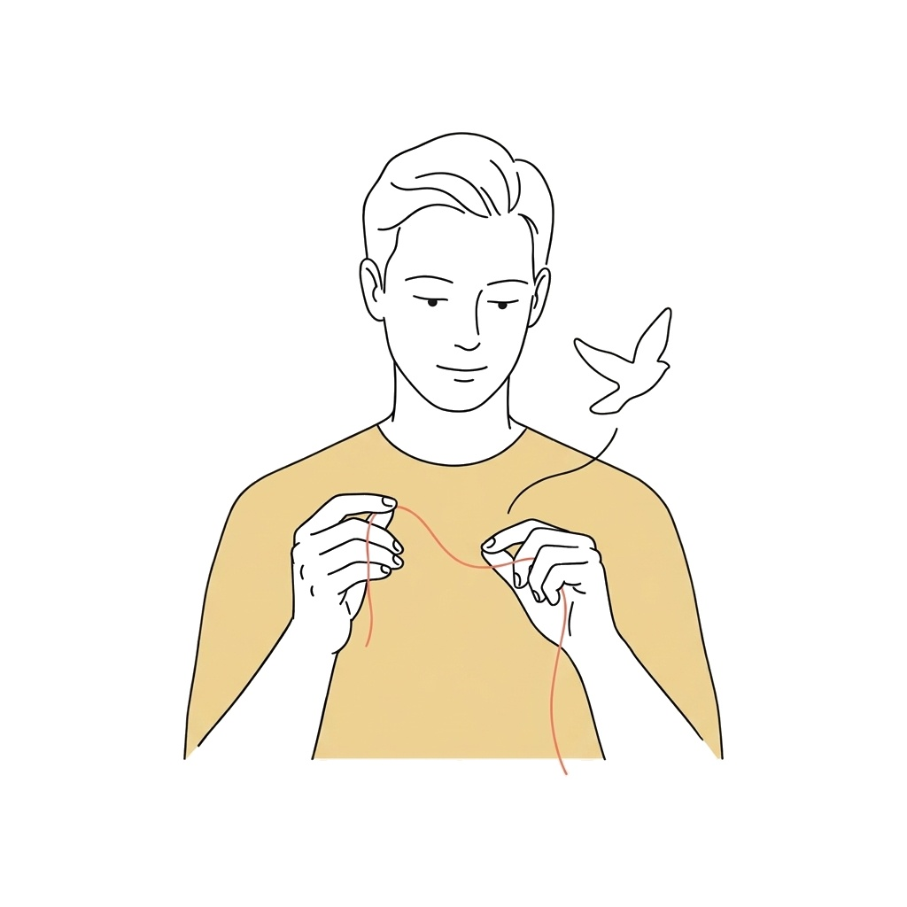
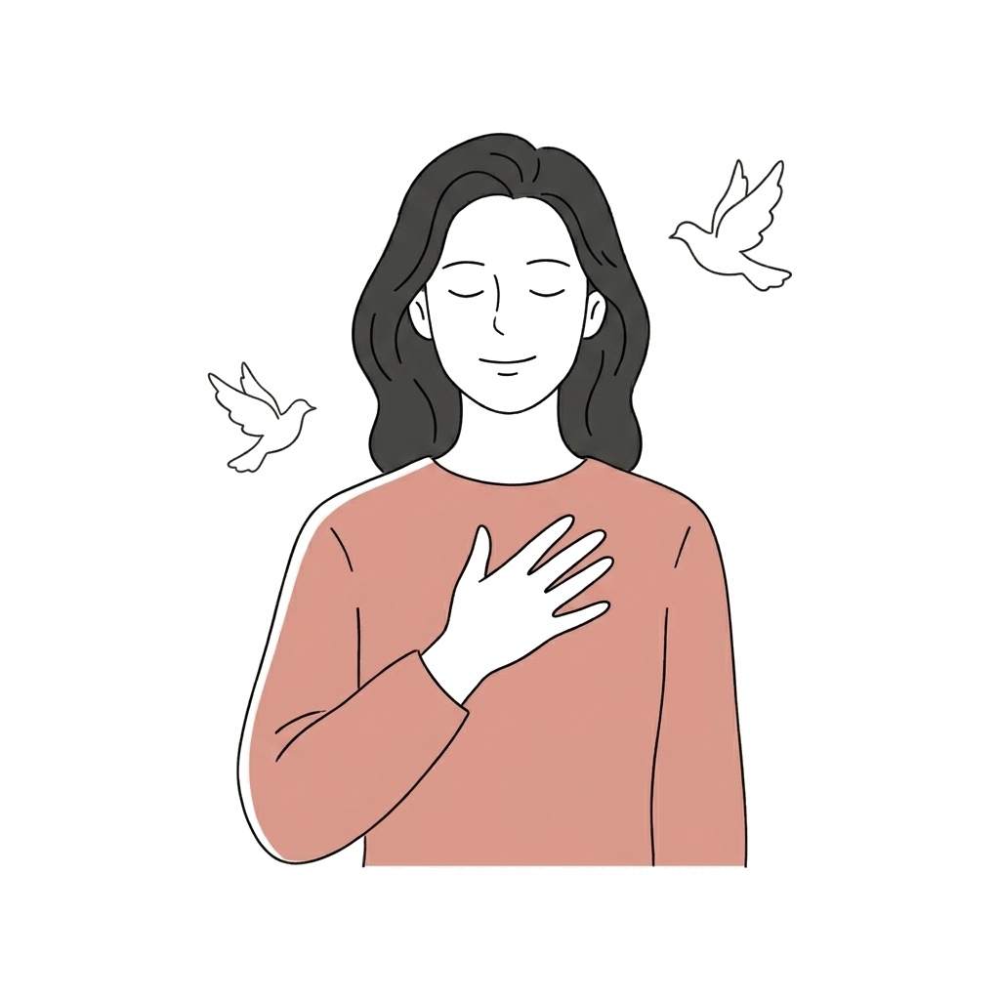
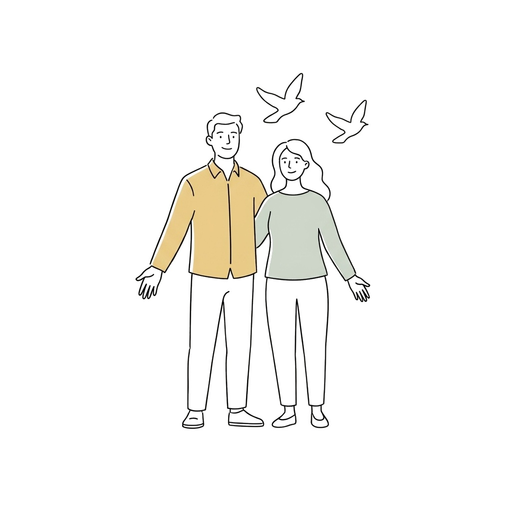

Функциональный союз вместо близости
Вы взяли на себя роль «безупречного сервиса» и удобного партнёра, где ваш комфорт потребляют, не давая взамен живого эмоционального тепла.
Отметьте то, с чем связано ваше напряжение — на следующем шаге вы увидите точные состояния и получите персональный разбор ситуации:
Вы можете любить партнёра, но внутри постоянно ждать подвоха и проверять каждую мелочь. Так работает старая защита: психика заранее готовится к боли, чтобы не пережить её снова.

Вы взяли на себя роль «безупречного сервиса» и удобного партнёра, где ваш комфорт потребляют, не давая взамен живого эмоционального тепла.
Если в прошлом близость сопровождалась холодом или предательством, нервная система маркирует спокойствие как ловушку и держит тело в броне.
Годы сглаживания углов и страха расстроить близкого человека приводят к эмоциональному онемению — вместе с конфликтами исчезает и живая чувствительность.
Снаружи все три причины выглядят одинаково, но работа с ними строится по-разному. Первая встреча у нас всегда установочная — мы спокойно знакомимся, устанавливаем контакт и без спешки намечаем вектор работы с вашей ситуацией.
Первая встреча — установочная: она нужна для знакомства, безопасного контакта и прояснения вашего запроса. Продолжительность дальнейшей терапии и темп движения всегда строго индивидуальны.
Мы не тратим время на пересказ бытовых ссор. Вместо этого бережно находим момент в прошлом, где психика решила, что доверять опасно.
«Посмотрим, откуда на самом деле взялось это ожидание удара — и где ещё в жизни повторяется этот же сценарий.»

Когда срабатывает триггер, тело сжимается быстрее мыслей. Мы мягко убираем накопленный страх, чтобы пауза в переписке перестала вызывать панику.

Вы начинаете видеть реального партнёра рядом с собой, а не тени прошлых обид. В результате вы приходите к своей цели — строить тёплые отношения, где можно спокойно доверять без проверок и страха.

Способность уверенно проводить сложные встречи и переговоры без страха вегетативного срыва и потери опоры.
Возвращение живого отклика от достижений и денег, появление спонтанных желаний за пределами работы.
Умение провести выходной без мониторинга рабочих чатов и спокойно говорить «нет» без разрушающего чувства вины.
Я знаю состояние, когда тело — просто «такси для головы», которое чувствуешь только через боль или износ. Позади тяжёлое детство, 20 лет работы в крупном бизнесе рядом с первыми лицами (ВТБ-Лизинг, Ямал СПГ, Штокман), переподготовка в МГУ и очная магистратура НИУ ВШЭ.
Я сама прошла эту трансформацию через 8 лет личной терапии — и я понимаю, зачем вы здесь. Меня невозможно шокировать вашей историей, стыдом или страхом потерять контроль.
«Я бережно покажу свет в конце туннеля — и это точно не будет свет идущего навстречу поезда».
Дипломы подтверждают квалификацию, но доверие возникает, когда вы слышите живой голос, интонацию и чувство юмора человека. Я практикующий психолог, а не профессиональный блогер: на моей странице в Instagram нет вылизанных сценариев и поучительных лекций — только живая речь, прямые мысли про контроль в кризис, отношения, деньги и честный рассказ о себе.